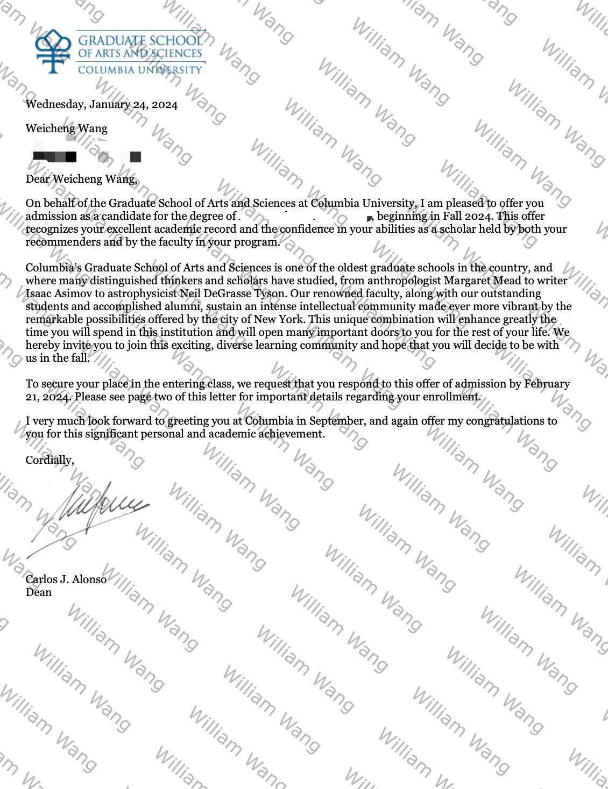
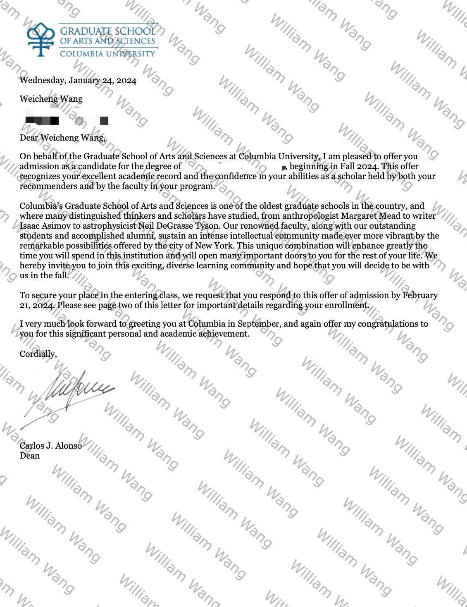
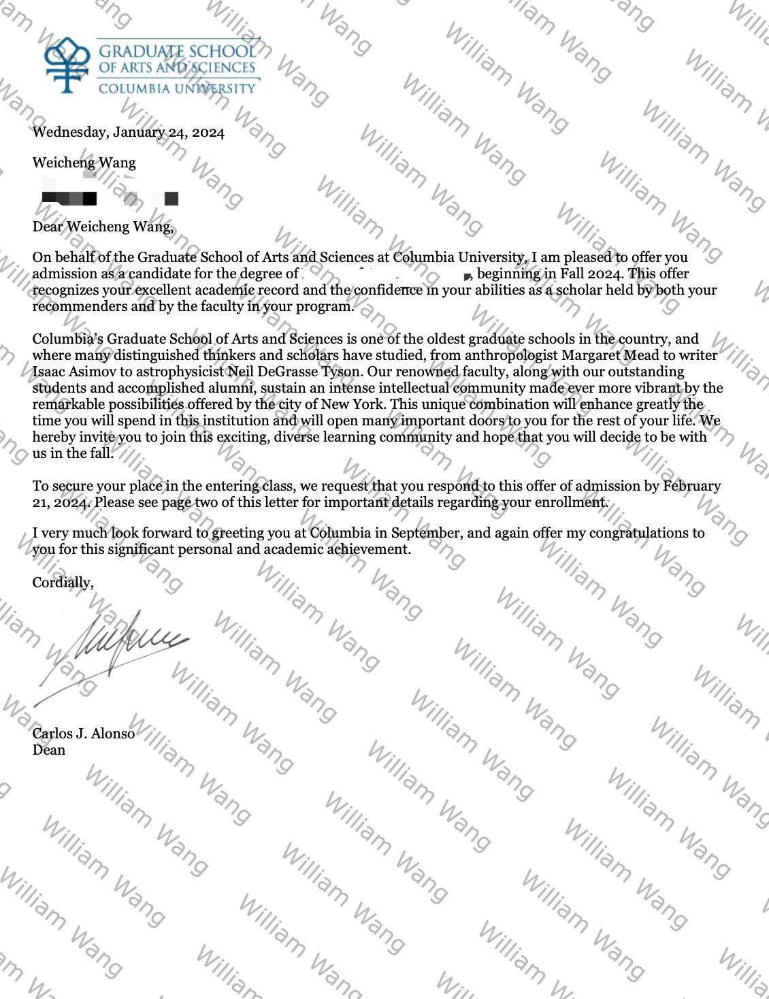

录取展示
以下为部分录取通知书截图（已做隐私处理，仅作展示）。


 



为有志于出国深造的本科生与研究生提供指导与支持。
面向本科与研究生申请者，提供端到端的一站式升学咨询。所有服务均基于你的学术背景、兴趣方向与长期目标量身定制。
William 曾为自己及他人获得以下院校录取：
🎓 本科：UC San Diego、UC Davis、Ohio State、Northeastern、UBC、University of Toronto
🎓 研究生：Harvard Medical School、Duke（Fuqua）、Columbia、USC、UCSD（$30,000 奖学金）
以下为部分录取通知书截图（已做隐私处理，仅作展示）。
